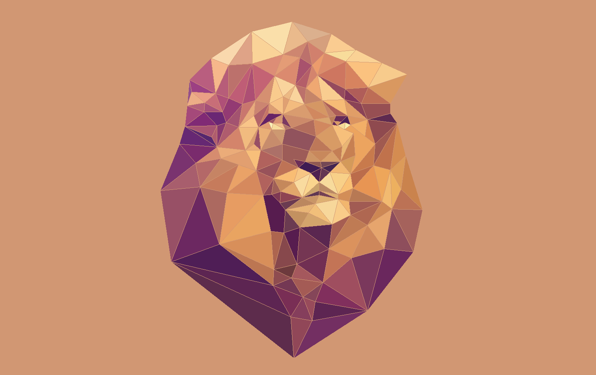

Triangles are rasterized by sampling across the pixels of the framebuffer. The simplest approach, which is how we implemented task 1, is to sample the point at the center of each pixel. We check if the point is within the triangle we are rasterizing, and if so, fill in the whole corresponding pixel with the color.
To check if a sample point is within the triangle, we do three line tests. In 2D space, a line can be thought of as something that separates the plane into two halves. If the line is defined with a standard equation L(x, y) = Ax + By + C, the two halves are separated by whether the line equation is greater than 0, or less than 0. (And when it is equal to 0, we are on the line.)
We can create three lines from each pairing of the three points of a triangle. If the point is always on the >= 0 side of the line, or if it’s always on the <= 0 side of the line, then we know it must be in the triangle and thus the pixel should be filled with the given color.
One optimization we made was to only sample points on pixels that create a bounding box around the triangle we are rasterizing. This way, we don’t sample every pixel in the framebuffer. Using the three corner coordinates of the triangle, we calculate the minimum and maximum x and y coordinates that would contain the triangle, and then only sampled points within that range.
The supersampling algorithm is very similar to the original triangle rasterizer, except for two big changes: how points are sampled within a pixel, and how the color that eventually fills the pixel is determined. Due to these changes, some other functions and data structures were used to help.
We iterate through the pixels in the bounding box of the triangle as usual. For every pixel we are on, we take n samples within the pixel instead of just one sample at the center of the pixel (n being the sample_rate). The samples are distributed evenly over the pixel, so there is another set of for loops sampling each of those points within a certain pixel. Now that the number of samples has increased by a factor of sample_rate times, we store the colors at each sample point in a sample_buffer Vector that has this increased size. This is different from how we just called fill_pixel for simple triangle rasterization.
Now to draw to the actual framebuffer, the work is done in the resolve_to_framebuffer function. For every pixel that needs to be drawn, we average the colors stored in the corresponding sample buffer for all the points that were sampled in that pixel. Then this averaged out color is what the pixel color is set to. With this change to how the sample_buffer is used, we also edited the fill_pixel function so that it still draws lines and points correctly even with supersampling.